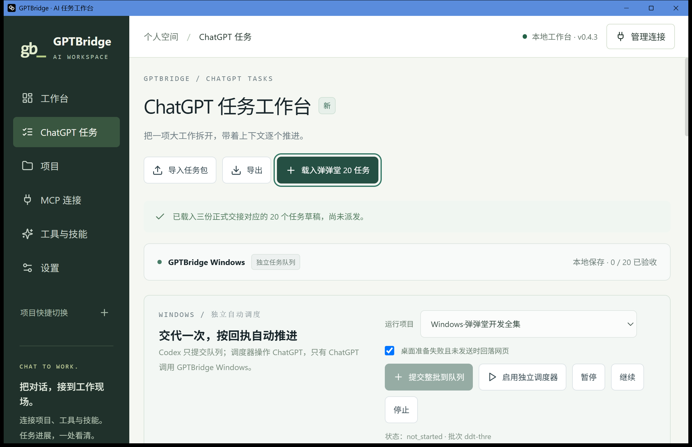

2026-10-22。最终功能源码 fbf40195f2dc217df13787e48c58c20f35e253fd 已推送，Windows 候选构建 成功，NSIS 安装退出 0。未发布 Release，未构建或访问 Mac。
18 项 Node、12 项 Python 离线测试通过；Svelte 检查、前端构建、PowerShell 语法、Rust 测试目标编译及 NSIS 构建通过。Rust 测试目标仅编译，没有执行。
Windows 新客户端已启动，原生“ChatGPT 任务”页面载入 20 个草稿，选中 Windows 弹弹堂开发全集，并自动识别已提交的同一批队列。状态 not_started，调度器没有启用，发送 0。安装完成时项目配置文件 SHA 与安装前相同；随后经原生界面启动 MCP，应用重写了 JSON 格式，逐字段比较配置仍完全相同，已有 FRP 进程保留；Windows MCP 经本机界面恢复监听 127.0.0.1:38766，没有协议或工具探测。

安装包 SHA256：722208e2cb3f842d3137d8286a264a96a1c1766253ae5ec1c319823735e1516c。安装后 EXE SHA256：b42f675068af90bfffa8e8a364a66acc1be1a319fa1c40c0c0ade8057e8f19d7。完整身份见 delivery.json；旧 EXE 与原配置备份保留在本机私有回滚目录。
Codex 本机插件禁用、两个桥接 app 的新进程 callable=false，PreToolUse 拦截已启用并受信任；未重启现有聊天。只允许文件队列提交和状态回读，不允许 Codex 启用调度器或执行发送器。67 个其他聊天改动文件哈希未变。
用户下一步：在 Windows GPTBridge 的“ChatGPT 任务”页面选择模型/思考强度和客户端，独立点击“启用独立调度器”。桌面准备阶段明确未发送时才可回落网页；发送未知不重发。真实 ChatGPT 控件身份、Pro/思考强度组合、消息发送、用户启用后的调度整链路以及 20 项业务完成均尚未验证。缺失控件或选项时应保留阻塞，不能视为完成。